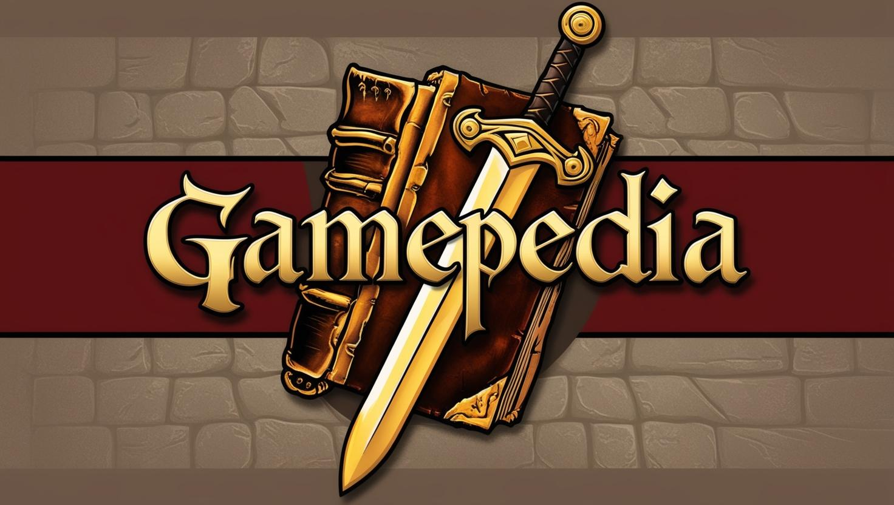
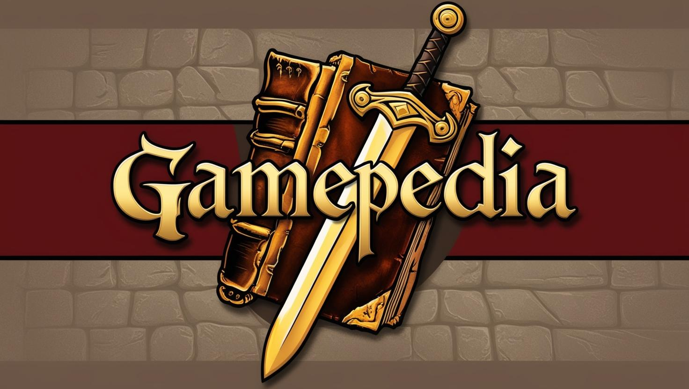

Gamepedia'ya Hoş Geldin!
Ortaçağ ve mitolojik temalarla bezenmiş bu evrende; oyunlar, haberler, blog yazıları ve daha fazlası seni bekliyor.
Ortaçağ ve mitolojik temalarla bezenmiş bu evrende; oyunlar, haberler, blog yazıları ve daha fazlası seni bekliyor.

Burada kehanet yok, sadece oyun var.
Gamepedia; dijital krallığın dört bir yanındaki oyunculara haber taşıyan, destan yazan, yorum yapan ve kendi hikâyesini anlatmak isteyenlere açık bir bilgi kalesidir. Bizler; joystick’i kılıç, klavyeyi tüy kalem, pikseli kutsal emanet sayan bir topluluğuz.
Bu site, sıradan bir oyun platformu değildir. Burası:
- Ejderha gibi güncellemelerden,
- Büyücülerin yazdığı blog yazılarından,
- Kara kulede dönen en yeni teknoloji dedikodularından oluşan,
- Ve elbette herkesin kendi oyun macerasını anlatabildiği bir lonca salonudur.
Taverna köşesinden gelen blog yazılarını oku, büyücülerin öngördüğü oyun haberlerini takip et, kendi maceranı kaleme al… Ya da sadece yukarıdaki tahtadan oklara tutunarak sayfa içinde süzül!
“Kaydetmeyen kahraman, tarih yazamaz.”
Burada her oyuncunun sesi vardır — seninkini de duymak için sabırsızlanıyoruz!